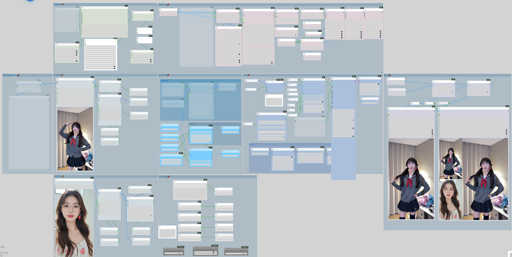

Animate-Pro 进阶工作流架构

核心技术栈： 方案基于 WanVideo 2.2 (14B) 算力底座，深度集成 Uni3C ControlNet 结构引力场。通过多路特征注入（Face+Pose+CLIP），在 高清分辨率下实现了极致的时序稳定性，支持长视频的动态运镜重绘。
28岁 | 广州 | 计算机技术硕士 | 专注极高保真视频流重构方案

核心技术栈： 方案基于 WanVideo 2.2 (14B) 算力底座，深度集成 Uni3C ControlNet 结构引力场。通过多路特征注入（Face+Pose+CLIP），在 高清分辨率下实现了极致的时序稳定性，支持长视频的动态运镜重绘。
从《画江湖之不良人》的国风重构到超现实主义数字生命实验，我将完整的工作流参数与创作逻辑同步至小红书平台。点击下方链接，见证 AIGC 与艺术的边界碰撞。
🚀 访问全量 AIGC 二创作品集